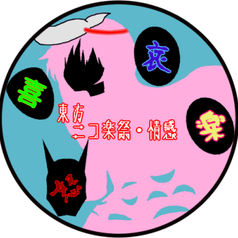

トップページ
東方ニコ楽祭について
企画詳細
第１回 東方ニコ楽祭・月見
第２回 東方ニコ楽祭・花見
第３回 東方ニコ楽祭・合作
第４回 東方ニコ楽祭・酒宴
第５回 東方ニコ楽祭・邂逅
第６回 東方ニコ楽祭・合作
第７回 東方ニコ楽祭・新春
第８回 東方ニコ楽祭・情感
第二回幻想コメント大賞
第９回 東方ニコ楽祭・思人
東方ニコ楽祭 全歌詠み一覧
リンク
お問い合わせ

東方ニコ楽祭・情感
閉幕しました。たくさんのご参加ありがとうございました！
開催概要
企画名称
東方ニコ楽祭・情感
企画内容
東方自作アレンジ投稿企画
大喜利イラスト投稿企画
作品鑑賞生放送企画
開催期間
2022年1月29日(土)21時～30日(日)21時（東方投稿祭SP 開催期間と同じ）
※企画によっては、投稿期間・実施期間が異なります。
企画詳細
主催者ブログをご参照ください。
大喜利企画 まとめ動画
更新情報
インフレームを使っています。未対応のブラウザをお使いの方は <a href="renew.html">更新情報</a>からどうぞ。
Tweets by nicogakusai